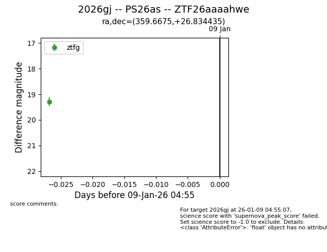
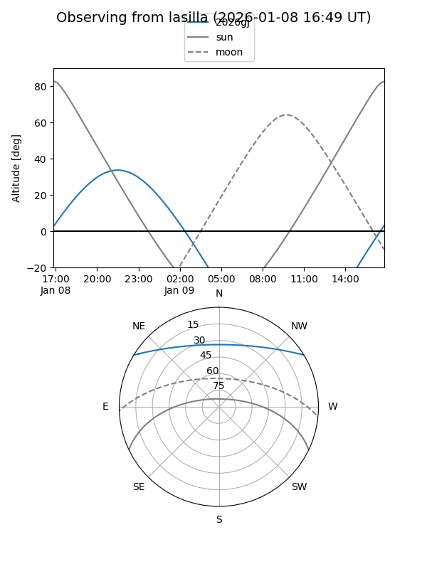
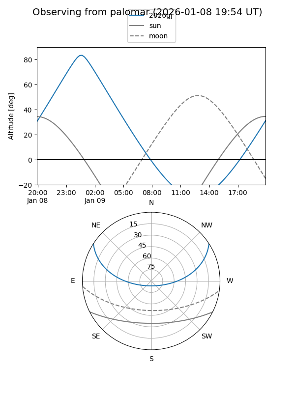

2026gj
Target 2026gj at 2026-01-09 04:56
Aliases and brokers:
FINK:
Lasair:
ALeRCE:
TNS:
YSE:
alt names
ZTF26aaaahwe (ztf,fink_ztf)
2026gj (tns,yse)
PS26as (panstarrs)
Coordinates:
equatorial (ra, dec) = 359.6675,+26.83443
equatorial (HMS+DMS) = 23:58:40.20,+26:50:03.97
galactic (l, b) = (108.6145,-34.56599)
Flags:
Photometry:
last ztfg=19.29
1 ztfg detections
Lightcurve

Visibility


Additional plots